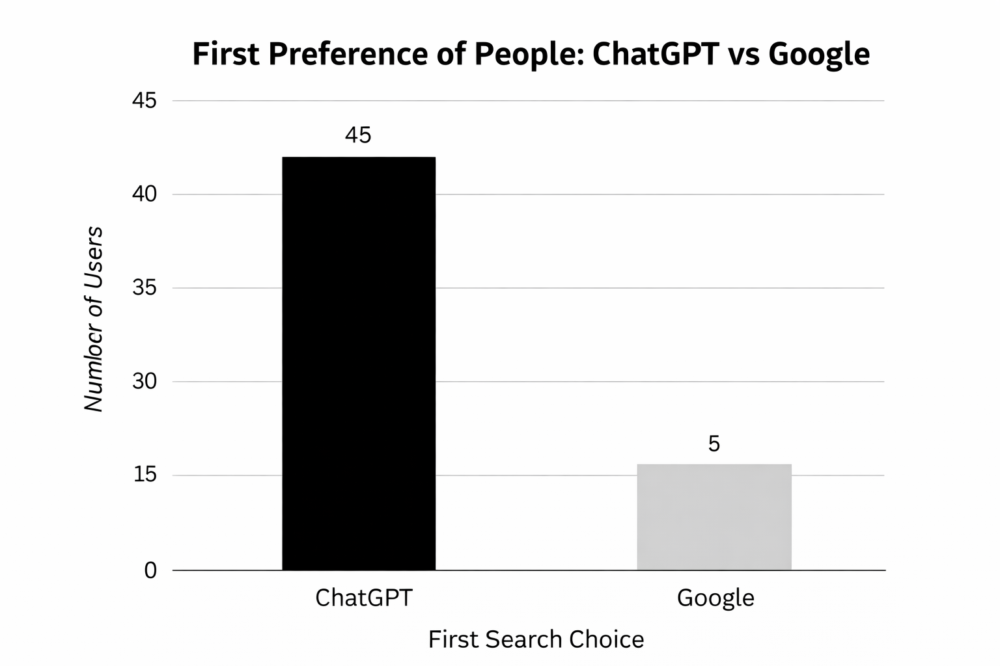
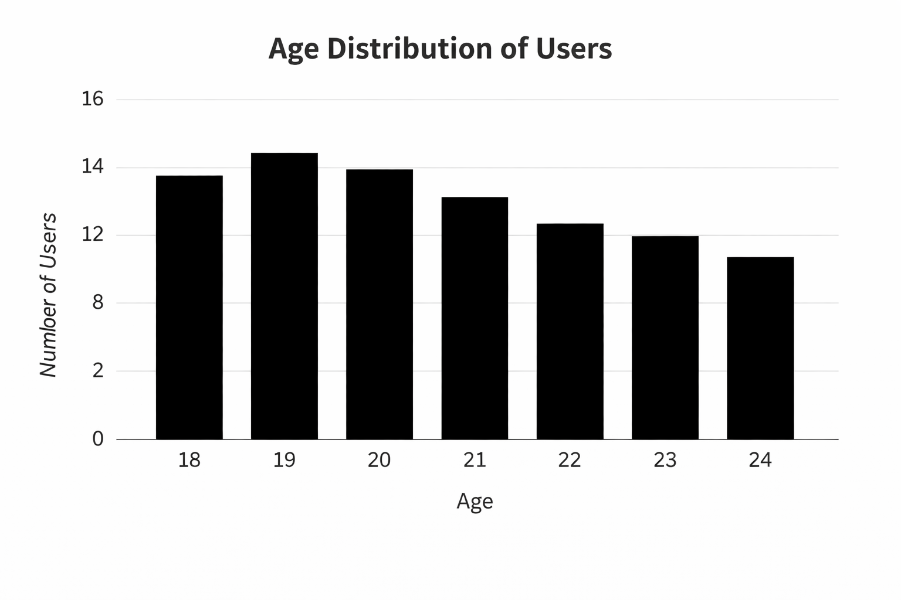
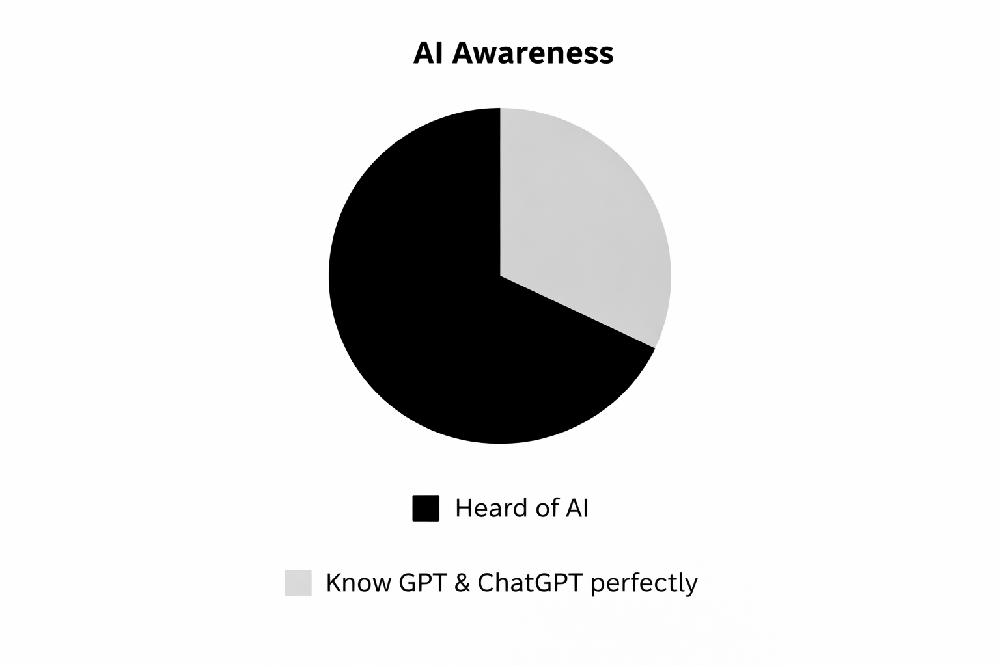
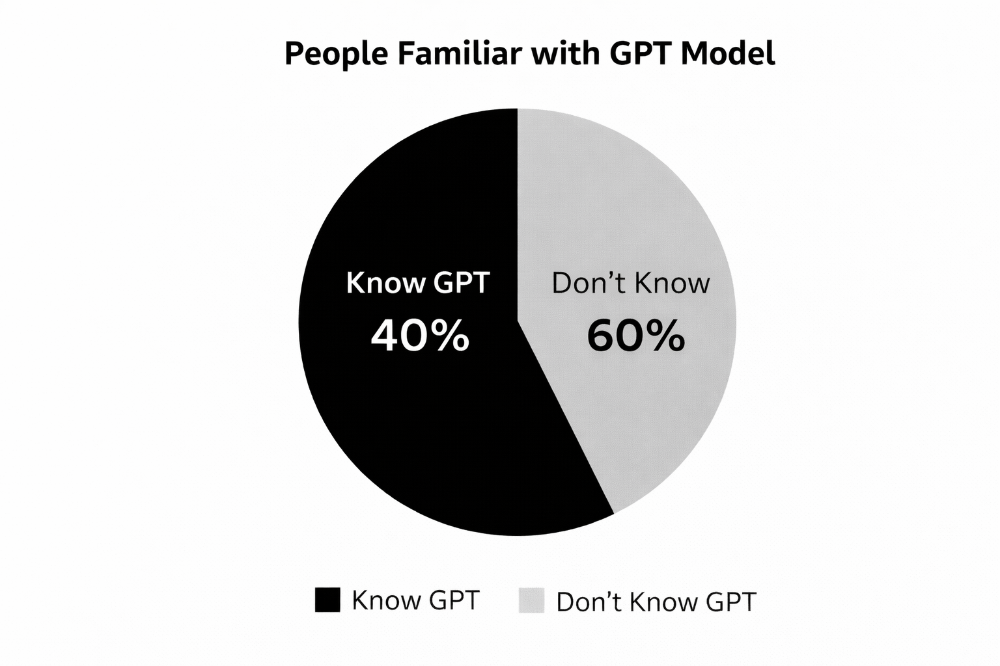

Adoption index
84.7%
Strong evidence that users are moving toward AI chatbots as a primary search tool.
Luxury analytical view
This experience presents the research as a sleek black-and-white 3D dashboard with charts, trend analysis, and visual storytelling.
Research signal
Analytical focus
Core snapshot
The project examines the transition from traditional search engines to conversational AI tools.
Adoption index
Strong evidence that users are moving toward AI chatbots as a primary search tool.
Direct answer rate
Users value concise, personalized answers over long result lists.
Efficiency score
Chatbots are perceived as faster and more purpose-driven for everyday queries.
Privacy concern
Growing awareness around data use and digital trust remains a significant factor.
Visual analytics
Behavior signals
Visual archive




Reference
Pokhrel, P., & Pandey, S. (2026). Analyzing the Shift in User Search Preference from Traditional Search Engines to Large Language Model (LLM)-Based AI Chatbots: A Survey-Based Study.